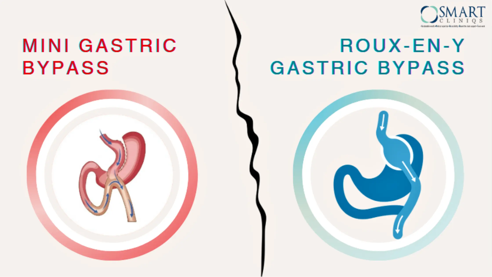

Comprehensive Guide to Intra Gastric Ballooning: Post-Procedure Diet and Lifestyle Tips
Intra gastric Ballooning helps us lose anything between 10 to 15 Kgs over six months to 1 year. This procedure enables us to feel full early, thus better control cravings & appetite. We eat smaller meals, follow a healthy diet, and feel lighter, healthier, and better.
After this procedure, you need to re-learn how to drink and eat. Your diet will gradually progress, from liquids to pureed, then to soft, and finally, you resume your normal diet any time after four weeks, but each one advances at their own pace.
During the first post-operative week, the patient begins with clear fluids and gradually goes on to full liquids. For the first two days, be sure to take lukewarm fluids, not more than half a cup at a time. Sip small, sip slowly, do not use straw, and avoid carbonated beverages. Please ensure that you drink at least 10 cups of liquids throughout the day. To get enough calories and protein, drink more dairy products. Do add to your drinks one tablespoon of good fats like olive oil, canola, or avocado oil to provide essential fatty acids and prevent complications.
When on liquids, you can have beverages like coconut water, lemon water, green tea, iced tea, veg broth and soups, chicken broth & soup, skimmed milk, buttermilk, dal soups, regular tea & coffee, etc. Do not add sugar to your drinks.
Second week onwards you can introduce pureed food to your diet. This will include items that are well-cooked and blended or mashed in a puree. Khichdi, porridge, and fruit yoghurt are some good examples. You need to eat slowly in small bites, chew well & stop once you feel full.
From the third week on you may start with soft foods, once you are comfortable with a pureed diet.
Three to four weeks after the procedure you gradually return to normal eating. Chew well, eat slowly, and eat small at a time. At this time, start light exercise –like walking. Maintaining regular physical activity is a must to promote good circulation and to help achieve a healthy weight. However, strenuous exercises are better avoided for a minimum of 6 weeks, till you are on your normal solid diet.
Have more queries related to intra gastric balloon surgery? Consult Prof. (Dr.) Atul N.C Peters, the best bariatric surgeon in Delhi at Smart Cliniqs.
Back to Blog